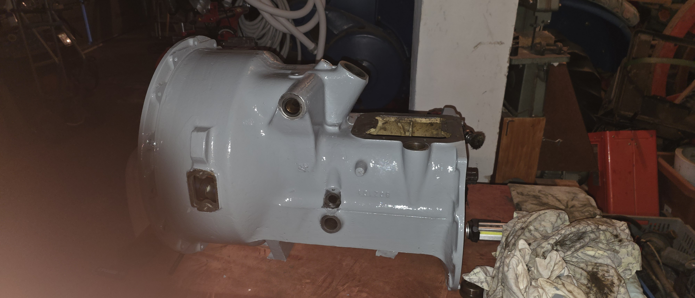

Dokumentation & Instandsetzung des Getriebegehäuses

Einstellen der Arretierung, Austausch verschlissener Schaltgabeln und Erneuern der Federn.
Erneuern der Kugellager und Dichtringe an Antriebs- und Zapfwelle zur dauerhaften Abdichtung.
Reinigung, Rissprüfung, Grundierung und Lackierung des Gussgehäuses.
Überholung der Ausrückwelle, Austausch des Ausrücklagers sowie Einstellen des Kupplungsspiels.